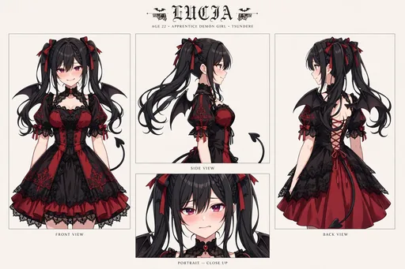

見習い悪魔ルチア｜ルチア（見習い悪魔）

プロフィール
| 名前 | ルチア（愛称：ルチ） |
|---|---|
| 立場 | 見習い悪魔。セラフィナのライバル |
| 見た目 | 黒髪ツインテール、赤紫の瞳、小さな黒いコウモリ翼とハート型の尾、黒×赤のゴシックドレスにチョーカー |
| 性格 | 勝ち気でツンデレ。日本のスイーツとゲームにめっぽう弱い |
| 口癖 | 「べ、別に楽しくなんか……」 |
| ペット | ノワール（黒猫の子猫） |
| 誕生日 | 6月6日 |
| 初登場 | 第6弾『ライバル降臨編』 |
ルチアについて
セラフィナを「堕落」させる任務を帯びて日本橋に降臨した見習い悪魔です。ガチャ作戦や巨大パフェ作戦など、セラフィナを落とすための作戦を次々と仕掛けます。
ところが作戦は全部裏目に出ます。釣るはずのガチャに自分がハマり、誘うはずのスイーツに自分が夢中になる。気づけば日本橋の推し活を誰より楽しんでしまう、憎めないライバルです。第11弾では後輩フィオレッタを堕落作戦の的にしようとして、逆に懐かれてタジタジになる場面も描かれました。
第8弾「神仏ご近所編」では神々とのご近所づきあいにも加わり、サービスシーン編では黒地に赤い花柄の浴衣姿で夏祭りのキービジュアルにも登場。登場するたびに、セラフィナたちとの距離が少しずつ縮まっていくのも見どころです。
登場するイラストパック
ルチアが初登場する第6弾『ライバル降臨編』はこちら。